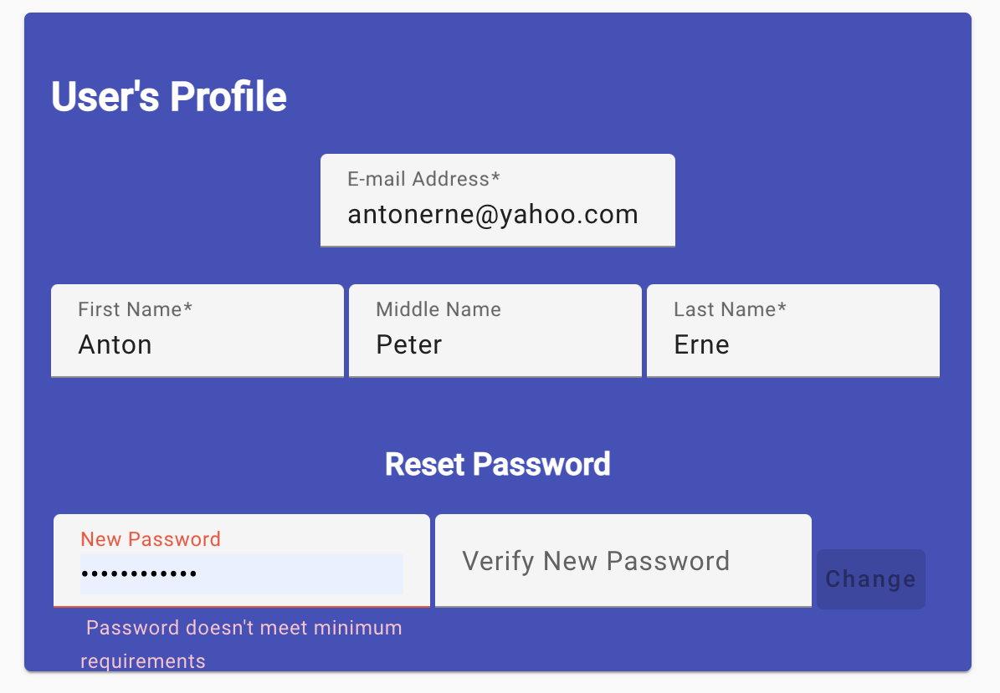

Changing Your Information/Password
You can change your user information and password!
First, click on the Profile Icon () in
the upper-right corner of the display. This will open the editor where you
can edit your email address, name and to set a new password.

-
Your email address must be different than anyone elses, but since you
receive email on that account, it should be unique. I recommend an email
address connected to your military, company or personal accounts. No emails
will be sent to this address at this time, so don't expect any from this
application.
-
The name information (first, middle and last) is self-explanatory, edit
any you need to change. The change will be recorded after completion.
-
Password Changes: Your password only lasts for 90 days before it is
locked and you have to see the administrator. The new password is first
checked for complexity (min 10 characters in length, and 2 of each type of
character (lower case, upper case, numeric, and other characters)). Then,
the second or verify inputs is compared against the first input area.
After both input areas are typed in and the password is checked for
complexity and verified, the "Change" button will appear and you can click
it to set the new password.
Login
Start a Mission